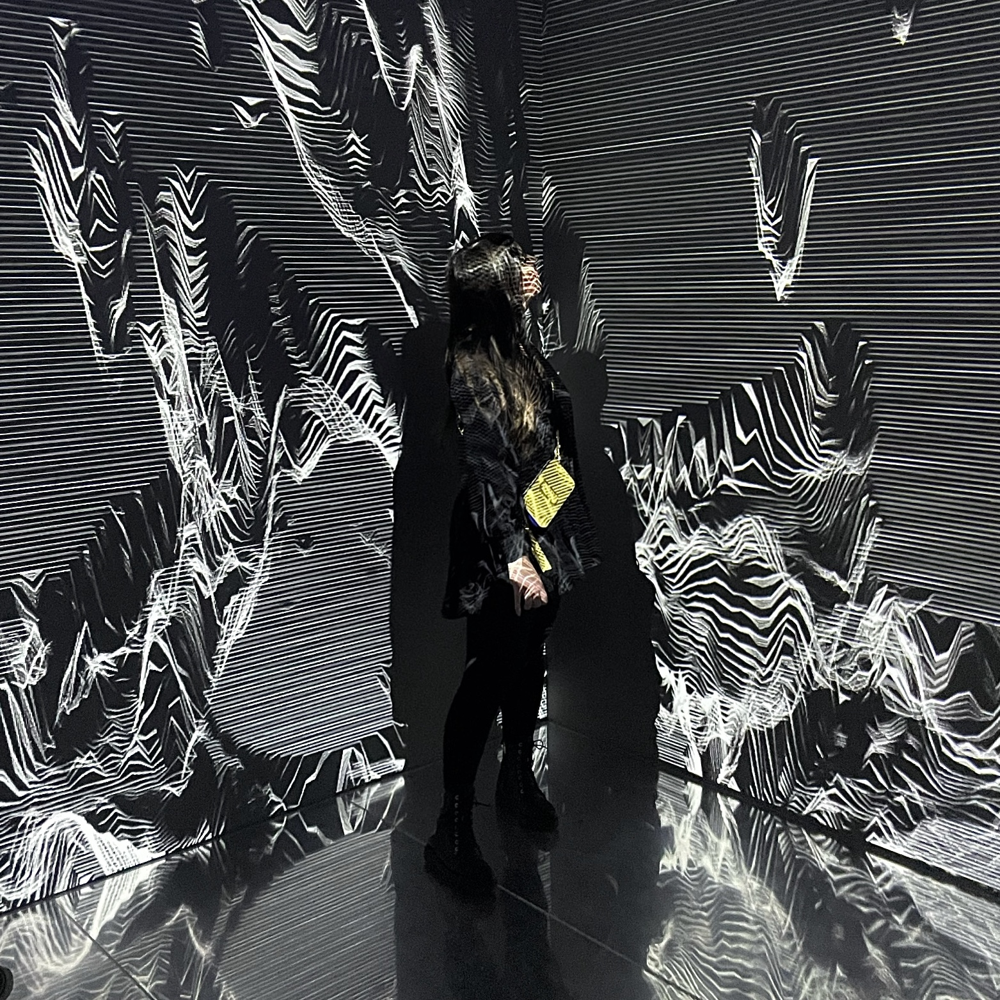

O mne
Ahojte, vitajte na mojej webovej vizitke, alebo aj životopise, trochu sa Vám tu predstavím. Volám sa Kristína, som slovenka a už 6 rokov žijem v krásnej Prahe. Momentálne som študentkou na kurze "Staň sa kóderkou" od Czechitas, v rámci ktorého sa učím vytvárať weby. A toto je prvý z nich. V jednotlivých sekciách stránky by som vám rada ukázala, čo rada robím vo voľnom čase, keď práve nesedím za počítačom.
Ešte teda objasním, čo za tým počítačom väčšinou robím. Už nejaký ten piatok pracujem ako Senior Social Ads Specialist, vlastne to bude už viac ako 5 rokov. Takže niektoré z reklám, na ktoré narazíte na soc. sieťach budú aj tie odo mňa. Ale aby som tu nerozprávala len o práci, môžete si radšej prečítať niečo o mojich voľnočasových aktivitách.
Cestovanie
Milujem cestovanie. A s tým sa spája aj ďalšie moje hobby a tým je fotenie, a to doslova všetkého a všade, takže každú sekciu budú sprevádzať aj moje amatérske fotky. Najviac ma bavia výlety, ktoré sú prepojením športu/spoznávania nových miest, ale aj oddychu. Takže také z každého niečo. Za posledný rok som žila viac ako mesiac v Portugalsku, bola som pozrieť aj Valenciu, Amsterdam, Mallorcu, talianske Dolomiti a samozrejme aj naše malé Slovensko. A ako som spomínala, teraz Vám ukážem pár fotiek, ako vedia vyzerať moje výletové dni.

Varenie
Ďalšou aktivitou a tiež mojím relaxom je varenie. A ako to pri varení býva, kreativite sa medze nekladú, a občas to výjde občas nie.

Šport
Nemôžeme zabudúť aj na šport. Tých športových aktivít je u mňa asi viac, no niektorým sa venujem v určitom období častejšie a niektorým zase menej. V zime, logicky, prevláda snowboard a skialp, a pokiaľ je málo snehu tak je to aj turistika a gym. A naopak po zvyšok roka sa to strieda medzi turistikou, tenisom, inline korčuľami, občas longboard, bicykel, volejbal, pri oceáne som skúsila aj surf(musím povedať, že to je podľa mňa tažšie ako to vyzerá) a ešte napríklad plávanie. Ale našla by som určite aj nejaké ďalšie.


Umenie a architektúra
Okrem tých "akčnejších" aktivít si rada zájdem pozrieť aj nejaké umenie a ak je v spojení s architektúrou, tak je to o to lepšie. Najviac ma baví moderné umenie, ale čo sa týka architektúry tak tú obdivujem z každého obdobia.
